Blend QML Type
Merges two source items by using a blend mode. More...
| Import Statement: | import Qt5Compat.GraphicalEffects |
| Since: | QtGraphicalEffects 1.0 |
| Inherits: |
Properties
- cached : bool
- foregroundSource : variant
- mode : string
- source : variant
Detailed Description
Blend mode can be selected with the mode property.
| source | foregroundSource | Effect applied |
|---|---|---|
|
|


Note: This effect is available when running with OpenGL.
Example
The following example shows how to apply the effect.
import QtQuick import Qt5Compat.GraphicalEffects Item { width: 300 height: 300 Image { id: bug source: "images/bug.jpg" sourceSize: Qt.size(parent.width, parent.height) smooth: true visible: false } Image { id: butterfly source: "images/butterfly.png" sourceSize: Qt.size(parent.width, parent.height) smooth: true visible: false } Blend { anchors.fill: bug source: bug foregroundSource: butterfly mode: "subtract" } }
Property Documentation
cached : bool |
This property allows the effect output pixels to be cached in order to improve the rendering performance.
Every time the source or effect properties are changed, the pixels in the cache must be updated. Memory consumption is increased, because an extra buffer of memory is required for storing the effect output.
It is recommended to disable the cache when the source or the effect properties are animated.
By default, the property is set to false.
foregroundSource : variant |
This property defines the item that is going to be blended over the source.
Note: It is not supported to let the effect include itself, for instance by setting foregroundSource to the effect's parent.
mode : string |
This property defines the mode which is used when foregroundSource is blended over source. Values are case insensitive.
| mode | description |
|---|---|
| normal | The pixel component values from foregroundSource are written over source by using alpha blending. |
| addition | The pixel component values from source and foregroundSource are added together and written. |
| average | The pixel component values from source and foregroundSource are averaged and written. |
| color | The lightness value from source is combined with hue and saturation from foregroundSource and written. |
| colorBurn | The darker pixels from source are darkened more, if both source and foregroundSource pixels are light the result is light. |
| colorDodge | The lighter pixels from source are lightened more, if both source and foregroundSource pixels are dark the result is dark. |
| darken | The darker pixel component value from source and foregroundSource is written. |
| darkerColor | The lower luminance pixel rgb-value from source and foregroundSource is written. |
| difference | The absolute pixel component value difference between source and foregroundSource is written. |
| divide | The pixel component values from source is divided by the value from foregroundSource and written. |
| exclusion | The pixel component value difference with reduced contrast between source and foregroundSource is written. |
| hardLight | The pixel component values from source are lightened or darkened according to foregroundSource values and written. |
| hue | The hue value from foregroundSource is combined with saturation and lightness from source and written. |
| lighten | The lightest pixel component value from source and foregroundSource is written. |
| lighterColor | The higher luminance pixel rgb-value from source and foregroundSource is written. |
| lightness | The lightness value from foregroundSource is combined with hue and saturation from source and written. |
| multiply | The pixel component values from source and foregroundSource are multiplied together and written. |
| negation | The inverted absolute pixel component value difference between source and foregroundSource is written. |
| saturation | The saturation value from foregroundSource is combined with hue and lightness from source and written. |
| screen | The pixel values from source and foregroundSource are negated, then multiplied, negated again, and written. |
| subtract | Pixel value from foregroundSource is subracted from source and written. |
| softLight | The pixel component values from source are lightened or darkened slightly according to foregroundSource values and written. |
| Example source | Example foregroundSource |
|---|---|
|
|
| Output examples with different mode values | ||
|---|---|---|
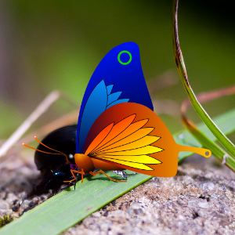 | 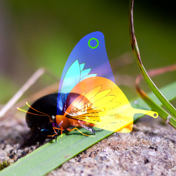 | 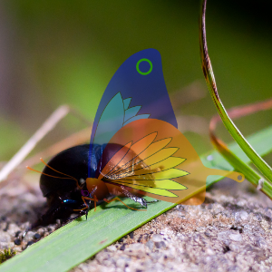 |
| mode: normal | mode: addition | mode: average |
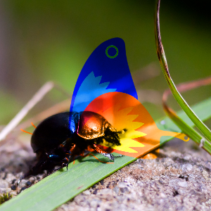 | 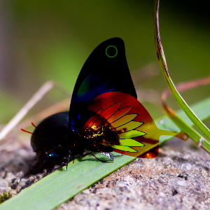 | 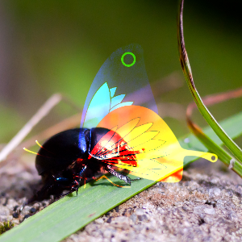 |
| mode: color | mode: colorBurn | mode: colorDodge |
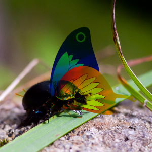 | 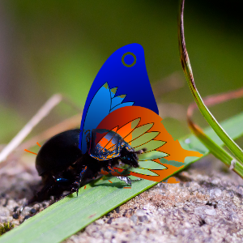 | 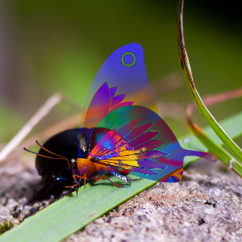 |
| mode: darken | mode: darkerColor | mode: difference |
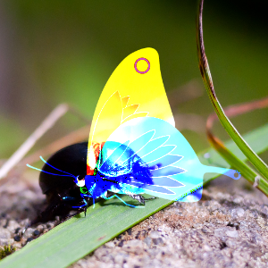 | 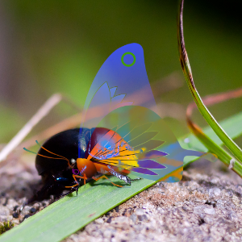 | 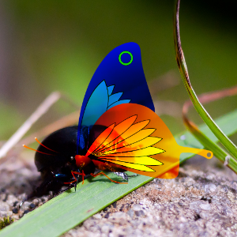 |
| mode: divide | mode: exclusion | mode: hardlight |
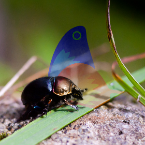 | 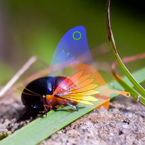 | 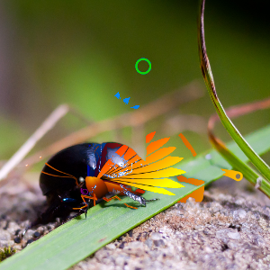 |
| mode: hue | mode: lighten | mode: lighterColor |
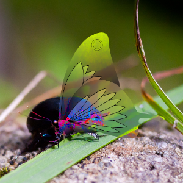 | 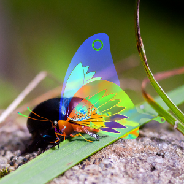 | 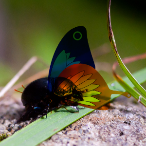 |
| mode: lightness | mode: negation | mode: multiply |
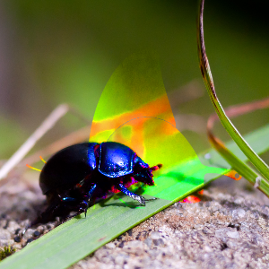 | 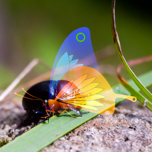 | 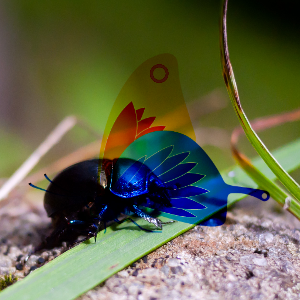 |
| mode: saturation | mode: screen | mode: subtract |
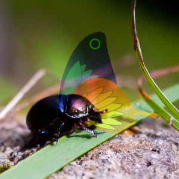 | ||
| mode: softLight |
source : variant |
This property defines the source item that is going to be the base when foregroundSource is blended over it.
Note: It is not supported to let the effect include itself, for instance by setting source to the effect's parent.